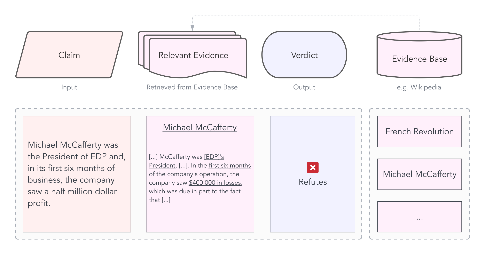
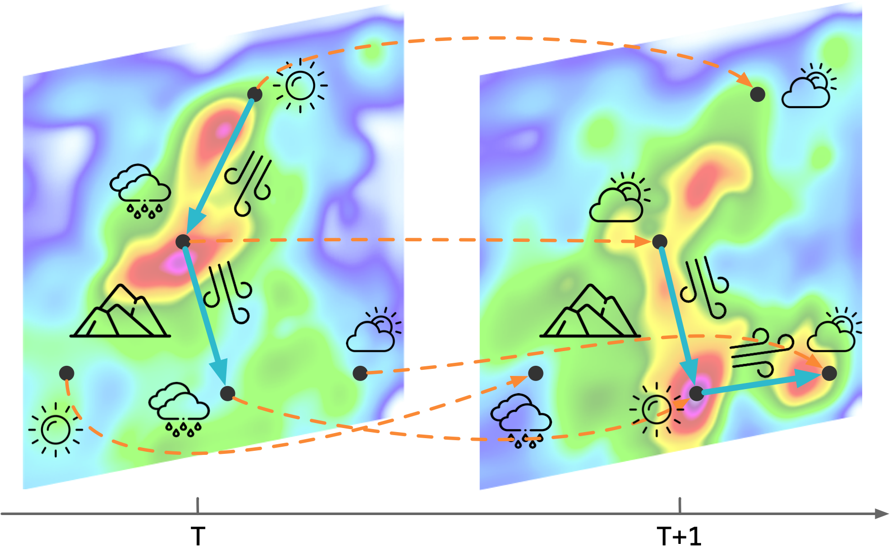
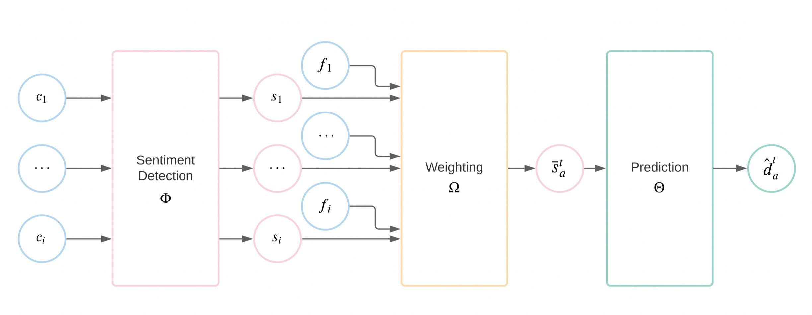
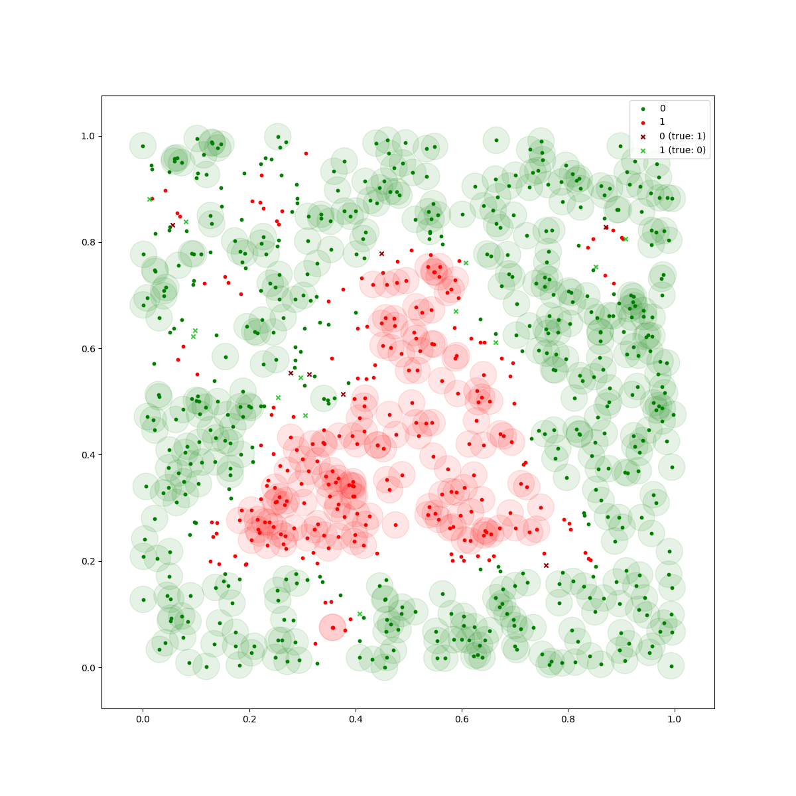
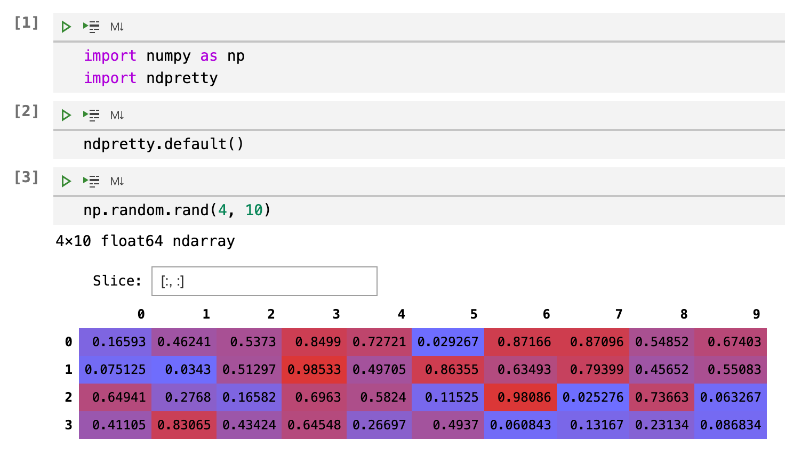
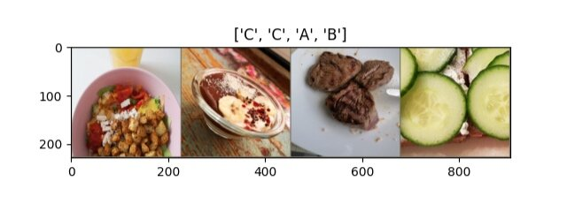
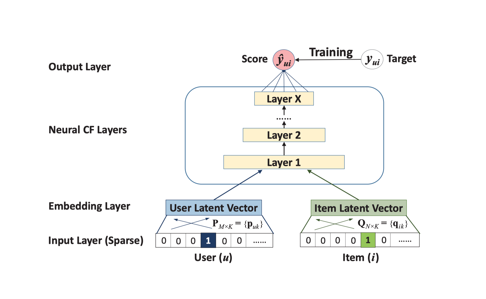

Patrick Deutschmann
About
CV
Blog
Categories
All
(9)
finance
(1)
ml
(7)
nlp
(2)
ops
(1)
python
(1)
research
(2)
security
(1)

More is More: An Analysis of Using Efficient Transformers for Fact-Checking
nlp
ml
research
For my Master’s thesis, I worked on the NLP task of fact-checking. It started out with the observation that current, traditional Transformers (such as BERT) can only handle a limited amount of…
Jun 13, 2022
Patrick Deutschmann

Modelling Air Pollution Transfers for Prediction, Analysis and Simulation
ml
Last spring, I worked on an exciting project in the course of my master’s studies. I designed a graph-based neural network that predicts air pollution and builds on the…
Jan 30, 2022
Patrick Deutschmann

Stock Tweets
ml
finance
I recently finished my Bachelor’s degree in business administration at the University of Graz. For my thesis, I combined machine learning with finance. The project is called
Sentiment for Price Prediction…
Nov 18, 2021
Patrick Deutschmann

Dependable Classification
ml
My friend Lukas and I participated in the
Siemens Mobility AI Dependability Assessment
, built a deep neural network classifier with safety guarantees and won a prize.
Jul 24, 2021
Patrick Deutschmann

ndpretty
python
I created a little Python module to display numpy ndarrays in a pretty table in Jupyter notebooks. Find the code on GitHub or get it with
pip install ndpretty
.
Jan 21, 2021
Patrick Deutschmann

Whose Food?
ml
I used transfer learning to predict what my friends are eating. The code is on GitHub.
Dec 12, 2020
Patrick Deutschmann
Author Attribution: DerStandard forum writing style
nlp
ml
This is a fun project my friend Lukas and I worked on for a course on natural language processing (NLP). We used the One Million Posts Corpus which contains user…
Jul 12, 2020
Patrick Deutschmann

Neural Collaborative Filtering in SystemDS
ml
Neural Collaborative Filtering (NCF) is a fairly new approach to recommender systems proposed by He et al. It is aimed at tackling the problem of collaborative filtering, such as the Netflix problem which is about predicting users’…
Jul 5, 2020
Patrick Deutschmann
Security in Container Orchestration
research
ops
security
I wrote my bachelor’s thesis on the issue of security in container orchestration, specifically in Kubernetes:
Aug 30, 2019
Patrick Deutschmann
No matching items